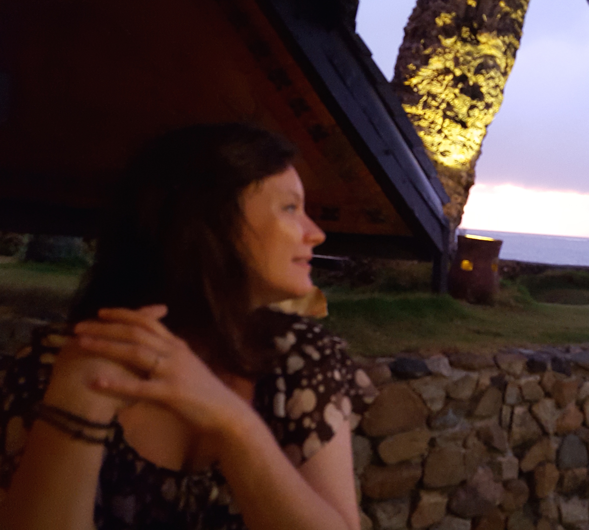

Who I am
 Currently, I am Postdoctoral Researcher at the Mathematical Institute, University of Bern and an Assistant Professor at the Faculty of Mathematics and Computer Science, University of Bucharest.
I hold a Master in Theoretical Computer Science (2009) from the Mathematical Institute of the Romanian Academy, and a PhD in Mathematics (2013) from the Faculty of Mathematics and Computer Science, University of Bucharest.
My research interests and expertise span across the field of substructural logics, especially many-valued logics. I am interested in first-order and modal calculi, automated reasoning and algebraic semantics for substructural logics.
I'm a member of the research project MODULO - Modelling uncertainty in non-classical logics (October 2015 — September 2017) funded by CNCS Human Resources Programme - Young Research Teams .
Please check also my CV (updated September 2015) and my profiles at Google Scholar and DBLP.
Jump to Home | Publications | Talks | Teaching | Contact